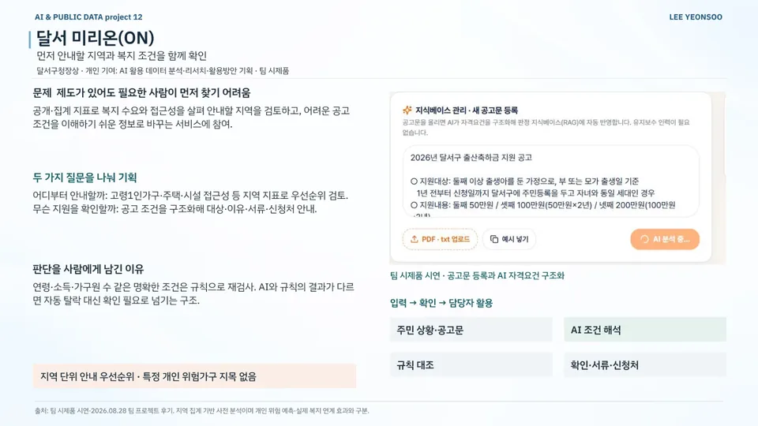

AI 서비스 기획 / 공공·정책 / 복지·공공서비스
달서 미리온(ON)
Dalseo MiriON — Welfare Guidance with a Dual Check
지역 집계와 개인 상담을 분리하고 AI 해석을 규칙으로 다시 확인하는 공공서비스 설계
현재 상태팀 시제품의 공고 구조화 시연 · 상담·검증·큰글씨 출력은 설계 단계
내 기여AI를 활용한 데이터 분석·리서치와 서비스 안의 AI 활용 방안 기획을 맡았습니다. 시제품과 본선 발표는 팀이 함께 준비했습니다.
문제
제도가 있어도 필요한 사람이 먼저 찾아가기는 어렵습니다. 지역 단위 수요 판단과 개인 지원 조건 설명은 쓰는 데이터도 책임도 다른데, 이를 AI 답변 하나로 합치면 위험합니다.
접근
- '어디부터 안내할까': 고령 1인가구·주택·시설 접근성 등 공개 집계 지표로 지역 우선순위 검토
- 공고의 대상·기간·필요 항목을 AI로 구조화하고 담당자 승인·수정 후 상담에 쓰도록 설계
- 주민 상황 문답 → AI 해석 + 규칙 재검사(연령·소득·가구원 수) → 근거·준비서류·신청처·큰글씨 안내
핵심 판단
개인 위험가구 지목 없이 지역 단위 안내 우선순위만 산출
AI 해석과 규칙 재검사 결과가 다르면 자동 탈락 대신 '확인 필요'로 담당 부서에 전달
결과
- 팀 시제품 시연: 공고문 등록과 AI 자격요건 구조화
- MVP 기능명세 v1 작성
- 입선 · 달서구청장상
AI 활용
공고 원문을 구조화하는 AI 기능을 시연했습니다. 주민 상황 해석과 규칙 검사, 담당자 승인·수정은 설계 단계입니다.
한계와 다음 단계
지역 집계 기반 사전 분석으로, 개인 위험 예측·복지 자격 확정·실제 연계 효과와는 다릅니다. 상담·검증·큰글씨 출력은 기능명세에 설계하고 일부만 시연했습니다. 시연 페이지는 팀원이 배포했습니다.
자료

크게 보기포트폴리오 슬라이드 32쪽 · 위 본문 내용을 한 장으로 정리한 슬라이드